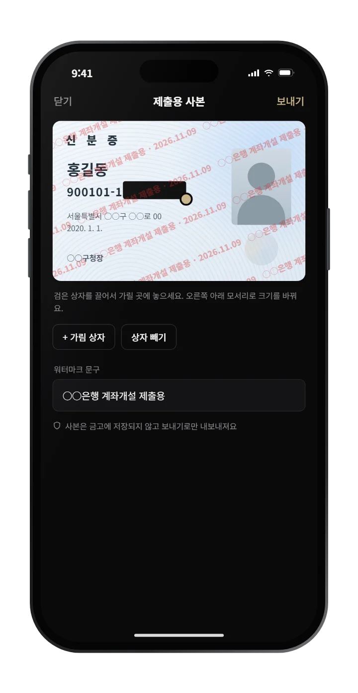

신분증 사진 휴대폰 보관, 갤러리에 두면 위험한 이유와 안전한 3단계
은행, 부동산, 중고폰 개통까지. 신분증 사진을 보낼 일은 많은데, 보낸 사진이 어디에 남는지는 잘 모릅니다.
결론부터: 신분증 사진은 일반 앨범과 클라우드에서 빼서, 폰 암호와 다른 비밀번호로 잠기는 기기 안 금고에 보관하세요. 꼭 필요할 때만 꺼내 쓰고, 보낸 뒤에는 메신저 대화방의 사진도 지우는 게 좋습니다.
갤러리에 두면 위험한 이유: 신분증 사진이 새는 경로
신분증 사진 한 장에는 이름, 생년월일, 주민등록번호, 주소, 얼굴이 함께 들어 있습니다. 명의도용에 필요한 정보가 한 장에 모여 있는 셈입니다.
| 경로 | 어떻게 새나 | 막는 법 |
|---|---|---|
| 폰을 빌려줄 때 | 앨범을 넘기다 바로 보임 | 일반 앨범에서 빼서 금고로 옮기기 |
| 클라우드 계정 | 계정이 털리면 사진 전체가 노출됨 | 서버에 올리지 않는 곳에 보관 |
| 메신저 대화방 | 보낸 사진이 양쪽 대화방에 남음 | 보낸 뒤 대화방 사진함에서 삭제 |
| 공유 앨범 | 여러 장 올리다 섞여 들어감 | 공유 전 선택한 사진 다시 확인 |
폰 암호와 다른 비밀번호로, 만든 사람도 못 여는 금고.
락박스는 사진을 서버에 올리지 않습니다.
안전하게 보관하는 3단계
- 일반 앨범에서 빼기: 금고 앱으로 옮긴 뒤 사진 앱의 원본과 '최근 삭제된 항목'까지 지웁니다.
- 클라우드에 올라가지 않게 하기: 서버로 업로드하지 않는 금고 앱을 고릅니다.
- 보낼 때 표시하기: 제출용 사본에는 '○○ 제출용' 같은 문구를 적어 두면 다른 곳에 악용되기 어렵습니다.


보관할 때 흔한 실수 점검표
| 확인할 것 | 이유 |
|---|---|
| 폰 암호와 다른 비밀번호 | 폰 암호를 아는 가족·지인도 열 수 없게 |
| 서버 업로드 없음 | 회사가 해킹돼도 내 사진은 안전 |
| 백업 방법 | 폰을 잃어버려도 내가 되찾을 수 있게 |
- 금고로 옮기고 원본을 둔다: 사진 앱 원본과 '최근 삭제된 항목'을 지우지 않으면 30일 동안 남습니다.
- 가리기만 해 둔다: 사진 앱의 가려진 항목은 폰 암호로도 열립니다. 폰 암호를 아는 가족에게는 소용이 없습니다.
- 스크린샷과 다운로드 사본을 잊는다: 제출 화면을 캡처했거나 메일 첨부를 내려받았다면 그 사본도 남아 있습니다.
- '나에게 보내기'를 보관함으로 쓴다: 메신저에 로그인한 PC나 태블릿에서도 같은 사진이 보입니다.
- 재발급한 뒤 옛 사진을 둔다: 새 신분증을 받았다면 예전 사진도 지웁니다.
금고 앱은 사진 금고 앱 추천 전 꼭 볼 것: '만든 회사도 못 여는' 앱 고르는 5가지 기준을 보고 고르세요. 사진 앱의 가리기가 어디까지 지켜 주는지는 아이폰 사진 숨기기 3가지 방법, 폰 빌려줄 때도 안 들키게에 정리했습니다.
폰 암호와 다른 비밀번호로, 만든 사람도 못 여는 금고.
락박스는 사진을 서버에 올리지 않습니다.
제출용 사본 만드는 순서
신분증을 보내야 할 때는 원본 사진 대신 제출용 사본을 만들어 보내세요.
- 꼭 필요한 칸만 남기기: 제출처가 요구하지 않는다면 주민등록번호 뒷자리, 주소, 발급번호처럼 쓰이지 않는 칸은 가립니다. 제출처가 전체 번호를 요구하는지 먼저 확인하세요.
- 제출처와 날짜 적기: '○○은행 계좌개설 제출용 · 날짜'처럼 사선 워터마크를 넣으면 같은 사진을 다른 곳에 쓰기 어렵습니다.
- 보낸 뒤 지우기: 메신저 대화방 사진함, 다운로드 폴더, 사진 앱에 남은 사본을 지웁니다.
워터마크 문구와 위치, 아이폰 사진 앱으로 넣는 순서는 신분증 사본 워터마크 넣는 법: 꼭 적을 3가지와 흔한 실수에 따로 정리했습니다.
락박스의 제출용 사본 기능은 검은 가림 상자와 워터마크를 넣은 사본을 만들어 보내기로만 내보내고, 금고에는 원본만 남깁니다.
신분증 사진이 이미 유출됐다면
| 할 일 | 어디서 |
|---|---|
| 내 명의 휴대폰 개통 조회·가입 제한 | 한국정보통신진흥협회 명의도용 방지 서비스(엠세이퍼) |
| 금융거래 명의도용 예방 등록 | 금융감독원 파인 '개인정보노출자 사고예방시스템' |
| 신분증 분실 신고·재발급 | 정부24 또는 주민센터 |
빨리 등록할수록 명의도용 피해를 줄일 수 있습니다. 순서는 휴대폰 가입 제한을 먼저 걸고, 금융 쪽 예방 등록을 한 다음, 신분증을 재발급하는 것이 좋습니다. 재발급하면 발급일자가 바뀌어, 예전 사진으로 하는 신분증 진위 확인에서 걸릴 수 있습니다.
모르는 개통 안내 문자, 가입한 적 없는 대출·카드 문자가 오면 유출을 의심하고 위 순서를 바로 밟으세요. 같은 사진을 보낸 대화방과 메일도 함께 정리합니다.
자주 묻는 질문
신분증 사진을 사진 앱에 그냥 둬도 되나요?
권하지 않습니다. 폰을 잠깐 빌려준 사이에도 보일 수 있고, iCloud 사진을 쓰면 클라우드에도 올라갑니다.
카카오톡 '나에게 보내기'에 보관하면 안전한가요?
대화방은 금고가 아닙니다. 다른 기기에서 로그인하면 함께 보일 수 있으니 보관용으로는 쓰지 마세요.
주민번호 뒷자리는 항상 가려도 되나요?
제출처가 전체 번호를 요구하지 않을 때만 가리세요. 요구하는 경우에는 워터마크로 용도를 제한하는 것이 좋습니다.
운전면허증·여권 사진도 같은 방법으로 보관하나요?
네. 모두 명의도용에 쓰일 수 있는 정보라 같은 3단계로 보관하고, 보낼 때는 제출용 사본을 씁니다.